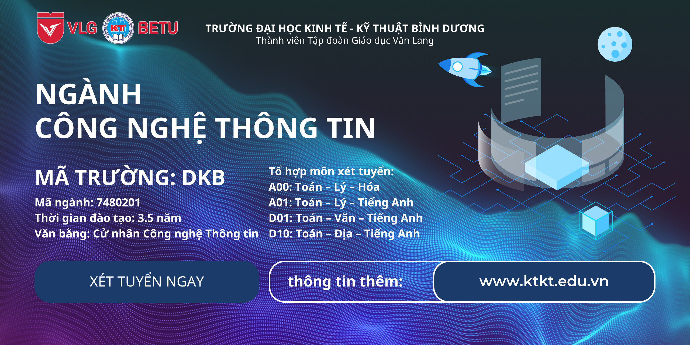

Hiểu một cách đơn giản, Công nghệ thông tin là ngành sử dụng máy tính và phần mềm máy tính để chuyển đổi, lưu trữ, bảo vệ, xử lý, truyền và thu thập thông tin. Người làm việc trong trong ngành này thường được gọi là IT (Information Technology). Mục đích của khối khoa học tổng hợp liên ngành này là nhằm phát triển khả năng sửa chữa, tạo mới và sử dụng hệ thống các thiết bị và máy tính bao gồm phần cứng, phần mềm để cung cấp giải pháp xử lý thông tin trên nền công nghệ cá nhân, tổ chức có yêu cầu.
Theo thống kê của Bộ Thông tin - Truyền thông, hướng quy hoạch nhân lực quốc gia đến năm 2025, Việt Nam cần 1 triệu lao động trong lĩnh vực công nghệ thông tin, nhu cầu nhân lực ngành này mỗi năm tăng 13%. Mặt khác, một “ưu ái” của thị trường lao động đối với ngành này là: thực tế các cuộc khủng hoảng kinh tế gần đây đã chứng minh, nhân lực ngành Công nghệ thông tin là một trong những ngành ít chịu ảnh hưởng nhất.
Học ngành Công nghệ thông tin sinh viên có thể nghiên cứu chuyên sâu về Khoa học máy tính, Công nghệ phần mềm, Kỹ thuật máy tính, Hệ thống thông tin, Mạng máy tính và truyền thông, An toàn thông tin mạng ở các trường đại học có đào tạo ngành công nghệ thông tin trên toàn quốc. Phần kiến thức chuyên ngành sẽ trang bị cho sinh viên những kiến thức liên quan đến việc nghiên cứu phát triển, gia công hay ứng dụng hệ thống phần mềm; kiến thức về thiết kế, xây dựng, cài đặt, vận hành và bảo trì các thành phần phần cứng, phần mềm của hệ thống máy tính và các hệ thống thiết bị dựa trên máy tính; kiến thức về mạng máy tính và truyền thông.
Hiện nay, hầu như mọi thứ trong cuộc sống đều liên quan đến việc ứng dụng công nghệ thông tin, các hoạt động trong đời sống xã hội như: giao lưu, giải trí, việc làm đều có thể trở nên dễ dàng hơn nhờ chiếc smartphone nhỏ gọn trong tầm tay đến thế giới đám mây của công nghệ số. Chính vì vậy, theo dự báo của các chuyên gia thì nhu cầu nhân lực cho ngành công nghệ thông tin ngày càng có chiều hướng gia tăng với nhiều cơ hội việc làm hấp dẫn.
Sinh viên tốt nghiệp ngành Công nghệ thông tin có thể làm việc trong các công ty, xí nghiệp, trường học, bệnh viện, các tổ chức, hiệp hội,… liên quan đến các lĩnh vực phát triển, sản xuất, lắp ráp, sửa chữa trang thiết bị phần cứng, chuyên thiết kế, triển khai các giải pháp tích hợp về phần cứng và phần mềm và cả những vấn đề về an ninh mạng như virut, hacker,… Thậm chí, bạn có thể là một chuyên gia IT tự do, hình mẫu ngày càng được ưa thích, làm việc độc lập, không phụ thuộc vào bất kỳ cơ quan, tổ chức nào hoặc có thể cùng một số đồng nghiệp khác lập ra một nhóm hay một công ty của riêng mình. Cụ thể, tốt nghiệp ngành Công nghệ thông tin, bạn có thể đảm nhận các vị trí sau:
Liên hệ để nhận thông tin tư vấn & hỗ trợ
Liên hệ chúng tôi: 0287.108.1979
Trung tâm Hỗ trợ: 0977.61.55.61
Email: tuyensinh@ktkt.edu.vn